International Journal of Mechanical Engineering and Mechatronics (IJMEM)
ISSN: 1929-2724

Volume 1, Issue 2 Year 2012 - Pages 15-27
DOI: 10.11159/ijmem.2012.003
Kinematic Analysis and Locomotion Strategy of a Pipe Inspection Robot Concept for Operation in Active Pipelines
Amr Bekhit, Abbas Dehghani, Robert Richardson
University of Leeds, School of Mechanical Engineering
Leeds, United Kingdom, LS2 9JT
men5a2b@leeds.ac.uk; a.dehghani@leeds.ac.uk; r.c.richardson@leeds.ac.uk
Abstract - A robot capable of operating in active pipelines would be of great commercial and industrial benefit. This paper outlines the requirements for such a robot and considers the advantages and disadvantages of existing systems. A new design for an inchworm robot based on the Gough-Stewart parallel platform is presented. The use of inchworm locomotion keeps the control system relatively simple, whilst the use of the Gough-Stewart platform allows the robot to benefit from the accuracy, rigidity and speed of parallel robots and provides a flexible base for any manipulators the robot may use. The design aims to provide minimal resistance to fluid flow by providing a low frontal area and by distributing the body of the robot towards the edge of the pipe, where the flow is slowest. An analysis of the robot's degrees of freedom, a derivation of the robot's inverse kinematics equations, and a static force analysis are presented along with a description of the robot's proposed locomotion algorithm.
Keywords: Active, Pipe, Inspection, Hexapod, Gough, Stewart, Parallel, Robot.
© Copyright 2015 Authors This is an Open Access article published under the Creative Commons Attribution License terms. Unrestricted use, distribution, and reproduction in any medium are permitted, provided the original work is properly cited.
1. Introduction
Pipelines form a very crucial part of the way we live today as they are the primary means of transporting many of the resources that we depend on, such as water, gas and oil. Many of these pipelines are situated underground so as not to affect everyday life. However, this makes repair and inspection of the pipelines a costly and difficult task, especially since many pipelines have not been designed to optimise automatic repair and inspection tasks (Tache et al. 2007) and rarely have any redundancy (Najjaran 2005). Without a reliable method of determining the exact location of a problem, large sections of a pipeline may need to be excavated. This can be made even more difficult if the pipes are situated in an urban environment, where the repair work can have a negative impact on the local residents and businesses.
A robot capable of navigating pipelines could help pinpoint the exact location of faults and possibly even be involved in the repair process. The development of a robot capable of functioning whilst the pipeline is still active would be of great commercial and industrial benefit as it would allow operation of the pipeline to be completely unaffected by any maintenance tasks.
In order to operate inside an active pipeline, the robot must fulfill the following criteria:
- Navigate all the features of the pipeline and overcome any obstacles.
- Provide minimum resistance to the flow, in order to have as little effect on the operation of the pipeline as possible, and to allow the robot to be constructed using smaller, cheaper actuators.
- Be designed so that the presence of fluid in the pipe does not adversely affect the operation of the robot's mechanical and electronic systems.
- Be able to generate and store its own power, as it can be expected to operate for extended periods of time in a pipeline.
- Have the tools and dexterity needed to carry out as many of the required inspection and maintenance tasks as possible, thus eliminating the need to shutdown and excavate pipelines in all but the most catastrophic situations.
- Be completely autonomous and able to move through a pipe network in a systematic and efficient manner, assessing the condition of the pipeline, performing maintenance tasks where required and reporting information back to a base station.
2. Assessment of Existing Pipe Inspection Robots
Although there have been many robots designed for the purpose of pipe inspection, most of these focus on operation in empty pipes and do not take into account the effects of pressurised fluid on the motion and stability of the robot. Existing pipe inspection robots can be categorised by their different locomotion methods: wheeled, inchworm, snake and legged.
2.1. Wheeled Robots
Wheeled robots are widely used in this application due to their simple design and control methodologies, energy efficiency and potential for miniaturisation (Tatar, Mandru, et al. 2007). The simplest of these behave similar to regular wheeled vehicles in that they rely on their own weight to maintain contact between their wheels and the pipe wall. Examples of such robots have been discussed in (Ong, Kerr, et al. 2003; Kuntze and Haffner 1998; Scholl et al. 2000). Although these robots have no theoretical upper limit on the diameter of pipe they can navigate, they can only travel through horizontal or near horizontal pipe networks, with limitations on the maximum incline that they can traverse. Such robots would not be able to navigate vertical pipe sections and would not be capable of operating in pipes with high rates of fluid flow as they would be swept away.
In order to overcome these problems, some wheeled pipe inspection robots have attempted to use an active method of attracting the wheels to the pipe wall. Examples of such robots have exclusively relied on magnetism, such as those seen in (Kawaguchi et al. 1995; Tache et al. 2007). Although the design of both these robots means that they are not restricted by pipe diameter, their use of magnets limits their operational environment to those which are constructed primarily of ferrous materials.
Other wheeled pipe inspection robots operate by pressing their wheels against the pipe surface through passive means (e.g. springs), or active means (e.g. linear actuators), or a combination of both. Examples of such robots are MOGRER (Fujiwara et al. 1993), the screw-drive robot presented in (Peng Li et al. 2008) and the MRINSPECT series of robots (Roh et al. 2009). Although these robots each have distinctive designs, they all follow the same general principle of pushing their wheels against the pipe wall and using them to propel down the pipe. Of particular note is Explorer, a segmented robot that is used for the inspection of gas pipelines. Unlike other pipe robots, Explorer was designed to operate in pressurised, active gas pipes. Each segment of the robot is designed to protect the internal workings from the high pressure inside the pipe and the shape of the robot is designed to provide minimum resistance to the flow of gas (Schempf et al. 2010).
Despite their mechanical simplicity, the efficiency of wheeled robots whilst climbing is not optimal, as the force used to push the wheels against the pipe wall acts against the actuators trying to drive the wheels.
2. 2. Inchworm Robots
Inchworm-type robots, like wheeled robots, are relatively simple to control and allow the robot to navigate the various features inside the pipe. Some of the simplest examples can be seen in (Zhelong Wang and Gu 2008; Hu and Appleton 2005). Each of these robots uses a vibration source as the main driving force, coupled with a passive mechanical system pressing against the pipe wall. The simple nature of these robots means that they are easy to control and usually have very few parts, but are incapable of navigating junctions.
Other inchworm robots have used an active method of pressing against the pipe wall. Although they are more complex than their passive variants, they have more control over their movement and can more easily change direction. Examples of such robots are discussed in (Yun-Jong Kim, Yoon, et al. 2009; Aracil, Saltaren, et al. 2003; Jeon et al. 2011). These robots all use a form of linear actuation for propulsion, coupled with full control over the extension and retraction of their limbs, which allows them to easily move forwards and backwards along the pipe. Examples of such robots have been demonstrated to navigate straight pipe sections and bends.
Unlike wheeled robots, inchworm robots cannot continuously move forwards, but rather move forward in steps, which can make them slower than their wheeled counterparts. However, they are likely to be more efficient during climbing as the force pushing the robot's 'feet' against the pipe wall acts perpendicular to the robot's direction of motion and thus does not hinder it.
2. 3. Snake and Legged Robots
Snake and legged robots both have many degrees of freedom, which permit them a wide range of different motions. However, this results in robots using more actuators and having more complex control systems than those found in robots using other locomotion types. Examples of legged pipe inspection robots can be found in the works of (Neubauer 1994) and (Zagler and Pfeiffer 2003) and are capable of navigating bends and junctions in a pipe. Similarly, snake robots used for pipe inspection can be seen in (Kuwada et al. 2008; Fjerdingen, Liljeback, et al. 2009; Wright et al. 2007). These robots consist of several modules connected together using actuated joints. Movement is primarily achieved through the use of travelling wave locomotion.
The serial nature of both these locomotion types means that they require high power actuators and have limited payload capacity (Aracil, Saltaren, and Reinoso 2003). The nature of travelling wave locomotion in snake robots can make it difficult for sensors to take stable readings of their environment (S. Wakimoto et al. 2003). As pipelines are generally uniform and structured environments, the complexity of legged and snake robots may not be required for this application, especially since robots with simpler locomotion methods have demonstrated their ability to navigate the various features in pipelines.
3. Robot Design
From the literature review, a number of different locomotion methods were identified that could be used to develop a pipe inspection robot. When considering design concepts for the proposed robot in this paper, snake and legged locomotion methods were dismissed due to their control complexity, and wheeled methods were not deemed to be the most efficient method for climbing. Inchworm locomotion was determined to be best method for a climbing robot and could be implemented using relatively simple control algorithms. Based on this, and inspired by the work done by (Aracil, Saltaren, and Reinoso 2003) on their use of parallel robots for climbing, the design shown in Fig. 1 is proposed.
As can be seen from the figure, the robot design has the same configuration as a traditional Gough-Stewart platform. However, unlike conventional platforms, both the bottom and top bases are not fixed, but are formed from a ring of linear actuators. This allows the overall size of the rings to be changed in order to accommodate for different pipe diameters. In order to prevent the linear actuators from colliding with the pipe wall while navigating bends, several support discs extend out from the rings. These discs also provide the adhesion points between the robot and the pipe wall. The robot has 12 degrees of freedom and is controlled entirely by linear actuators. Fig. 2 shows an exploded view of the robot, identifying the main sections.
As well as providing enough degrees of freedom to navigate inside a pipe, the use of the Gough-Stewart platform allows the robot to benefit from the rigidity, accuracy and speed of parallel robots. This makes it an ideal platform to host a wide variety of tools that can be used inside a pipe and gives it the dexterity needed to use these tools to perform repair tasks.
The "skeletal" nature of the design aims to minimise the drag force exerted by the fluid in the pipe by having a small frontal area and by distributing the mass of the robot towards the edges of the pipe where the flow is slowest. Although the support discs used in the prototype would increase the robot's drag coefficient due to their non-streamlined design, they are perfectly adequate for initially testing the robot in a dry environment.
3. 1. Degrees of Freedom
The degrees of freedom of the design can be calculated using the Kutzbach-Greubler (KG) criterion as follows:
|
Total DOF = DOF of each link DOF constrained by each joint |
(1) |
Fig. 3 shows a kinematic representation of the robot. The support discs were omitted as they do not affect the degrees of freedom. In order to calculate the total degrees of freedom, the design will be analysed in two separate parts: the rings and the parallel platform.
3. 1. 1. Ring Analysis
Each ring consists of three prismatic joints connected together via rotary joints. The result of applying the KG criterion to the structure is shown below in Table 1.
Table 1. Results of applying the KG criterion to the ring in 3D.
|
Number of links (excluding ground link) |
5 |
|
Total DOF |
5x6 = 30 DOF |
|
Number of 1 DOF joints |
6 |
|
Total Constraints |
6x5 = 30 DOF |
|
Total DOF |
30 – 30 = 0 DOF |
By inspection, it is evident that this is not the case. If the same structure is examined in 2D, the following result is obtained:
Table 2. Results of applying the KG criterion to the ring in 2D.
|
Number of links (excluding ground link) |
5 |
|
Total DOF |
5x3 = 15 DOF |
|
Number of 1 DOF joints |
6 |
|
Total Constraints |
6x2 = 12 DOF |
|
Total DOF |
15 – 12 = 3 DOF |
The reason for this discrepancy is due to two of the rotary joints introducing redundant constraints into the system. In 3D, rotary joints constrain links such that they are coplanar and can rotate about a common point. By examining the ring structure in 3D, it can be deduced that only one rotary joint is needed to force the motion of the links to be coplanar, with the other two joints simply allowing two links to rotate about a common point. The KG criterion does not have a means of identifying redundant constraints and thus gives an incorrect result for this structure when evaluated in 3D. On the other hand, the nature of a 2D environment forces all components to be coplanar and thus the constraints imposed by the rotary joints are used only to enforce the rotation behaviour with no redundant constraints, which is why the KG equation produces the correct number of DOFs when calculated in 2D.
It is possible to form a kinematically identical structure in 3D by replacing two of the rotary joints with one spherical and one universal joint, although in practice, this might lead to a less rigid structure. This is shown below in Fig.5.
Re-evaluating the KG criterion in 3D results in the following:
Table 3. Results of applying the KG criterion to the kinematically equivalent ring.
|
Number of links (excluding ground link) |
5 |
|
Total DOF |
5x6 = 30 DOF |
|
Number of 1 DOF joints |
4 |
|
Number of 2 DOF joints |
1 |
|
Number of 3 DOF joints |
1 |
|
Total Constraints |
4 x 5 + 4 + 3 = 27 |
|
Total DOF |
30 – 27 = 3 DOF |
Three linear actuators can therefore be used to fully control the ring.
3. 1. 2. Parallel Platform Analysis
The parallel platform uses a conventional hexapod configuration with 6 vertical links connected to the upper and lower rings. Each link consists of a linear actuator with a universal joint connected on either end. One of the joints connects to the ring rigidly, so that there is no rotation between the joint and the ring, while the other is connected so that it can rotate with respect to the ring. Fig. 6 shows a kinematic representation of the platform.
Assuming that the top and bottom rings are rigid (and thus considered to be one link each), and with the bottom ring grounded, the KG criterion results in the following:
Table 4. Results of applying the KG criterion to the parallel platform.
|
Number of links (excluding ground link) |
19 |
|
Total DOF |
19 x 6 = 114 |
|
Number of 1 DOF joints |
12 (6 prismatic, 6 revolute) |
|
Number of 2 DOF joints |
12 |
|
Total Constraints |
12 x 5 + 12 x 4 = 108 |
|
Total DOF |
114 – 108 = 6 DOF |
As is the case with hexapod parallel robots, they have 6 degrees of freedom. For this robot, 6 linear actuators are used to control the parallel platform.
Combining the parallel platform with the top and bottom rings results in a robot with 12 degrees of freedom controlled entirely by linear actuators.
3. 2. Inverse Kinematics
In order to determine the actuator lengths needed to move the end effector to a target position and orientation, the inverse kinematics equations for the robot were derived. This was done by solving the vector equations that relate the target position and orientation to the robot's origin via the location and orientation of the linear actuators.
Fig. 7 shows a vector representation of the robot structure. Points 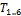 and 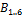 represent the connections between the top and bottom rings and their respective universal joints. The counterpart points 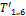 and are the projections of and , respectively, on to a plane that is parallel to the original ring plane but is coincident with the universal joint hinges. Points 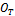 and are the local origins of the top and bottom rings, respectively. The origins are defined as the centroids of the triangle of linear actuators that form each ring. The counterpart points 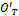 and  are projections of and in the same manner as points and . is considered to be the global origin of the robot and its axes are used as the global axis system, whilst is the target position. For simplicity, the support discs have been ignored as they can be represented by simple offsets along the z-axes of the local origins.
are projections of and in the same manner as points and . is considered to be the global origin of the robot and its axes are used as the global axis system, whilst is the target position. For simplicity, the support discs have been ignored as they can be represented by simple offsets along the z-axes of the local origins.
The vector representing any of the six vertical linear actuators can be expressed as 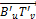, where 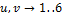 and the combination of u and v is one of the following pairs: (1,2), (2,3), (3,4), (4,5), (5,6) and (6,1). This vector can be related to the robot's counterpart origin and target position through the following equation:
|
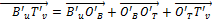 |
(2) |
In order to determine the vectors 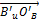, 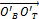 and 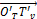, the positions 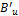, 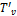, 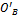 and relative to the robot origin need to be determined. Fig.8 shows how these points relate to the geometry of the ring.
The points 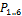 represent either or depending on whether the top or bottom ring is being examined. The lengths 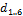 and the angles 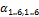 can be calculated from the extensions of the linear actuators that form the ring and the dimensions of the links connecting them together. The equations that govern them can be derived by examining the geometry of the rings in detail, as shown in Fig. 9.
Table 5 lists the length and angle definitions used to derive the equations.
|
Variable |
Description |
|
Input variables |
|
|
Lxy |
The lengths between the two universal joints on one side. This is a function of the current linear actuator extension and the size of the joints connecting the linear actuators together. |
|
t |
The length between a universal joint and the closest revolute joint. This is a fixed value determined by the size of the joints connecting the linear actuators together. |
|
Intermediate variables |
|
|
Sxy |
The lengths of the triangle sides. |
|
uxy |
The distances between two adjacent universal joints. |
|
mxy |
The
distances between the triangle corners and the triangle centroid |
|
θx |
The angles between each triangle side and a median. |
|
Output variables |
|
|
dx |
The lengths between each universal joint and the triangle centroid. |
|
αxy |
The angles between the dx segments. |
The Sxy lengths are simply calculated by adding the corresponding Lxy and t lengths, as follows:
|
|
(3) |
|
|
(4) |
|
|
(5) |
The mxy lengths are then calculated using the standard formulas for triangle median length:
|
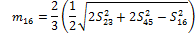 |
(6) |
|
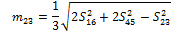 |
(7) |
|
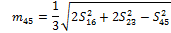 |
(8) |
With the Sxy and mxy lengths determined, it is possible to calculate the θx angles by examining the sub-triangle formed by each triangle side and two medians. In Fig. 10, the triangle formed by S16, m23 and m45 is shown along with the corresponding corner angle:
Using the cosine rule:
|
|
(9) |
Rearranging this equation results in:
|
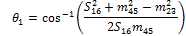 |
(10) |
Similarly, for the remaining angles:
|
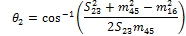 |
(11) |
|
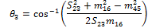 |
(12) |
|
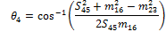 |
(13) |
|
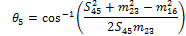 |
(14) |
|
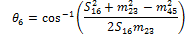 |
(15) |
With the θx angles calculated, it becomes possible to determine the dx lengths by examining the triangle formed by the t, dx and mxy lengths, an example of which is shown in Fig. 11.
Using the cosine rule:
|
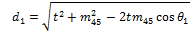 |
(16) |
Similarly for the remaining dx lengths:
|
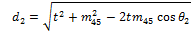 |
(17) |
|
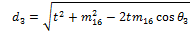 |
(18) |
|
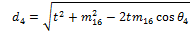 |
(19) |
|
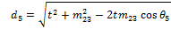 |
(20) |
|
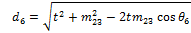 |
(21) |
Before calculating the αxy angles, the uxy lengths need to be determined first. This is done by considering the triangle formed by two adjacent t lengths and their corresponding uxy length, as shown below in Fig. 12:
Using the cosine rule:
|
|
(22) |
Similarly for the other uxy lengths:
|
|
(23) |
|
|
(24) |
The αxy angles can now be calculated by considering the triangle formed by each uxy length and its corresponding dx lengths as shown in Fig. 13:
Using the cosine rule:
|
|
(25) |
Rearranging this equation results in:
|
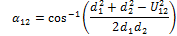 |
(26) |
Similarly for the other αxy angles:
|
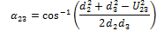 |
(27) |
|
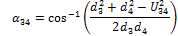 |
(28) |
|
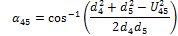 |
(29) |
|
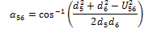 |
(30) |
|
|
(31) |
With the dx and the αxy angles calculated, the vectors relative to the ring's local origin can now be calculated using the equation below, assuming the axis system shown in Fig.8:
|
|
(32) |
The counterpart points for each ring are calculated by translating the original points along the ring's local z-axis for a distance s, where s is the distance between a universal joint's hinge and the point at which it connects to a ring. This is a fixed value for all the universal joints. For the top ring, this translation is in the –z direction, whereas for the bottom ring, it is in the +z direction, as shown below:
|
|
(33) |
The same translation is performed on and to calculate their counterparts and.
A further step is required for the vectors of the top ring and its origin, as they need to be expressed relative to the robot's global origin rather than that of the top ring. This is done by multiplying each vector by a transformation matrix, M, which represents the target orientation of the top ring relative to the bottom one:
|
|
(34) |
Once the positions of , , and have been determined, their values can be substituted back into Equation (2) to calculate . The modulus of represents the required extension of the linear actuator and can be sent to the robot's control system.
3. 3. Static Force Analysis
In order to determine the strength of the actuators required to hold the robot against the pipe wall, a simulation was run to estimate the magnitude of the forces exerted on the robot due to the fluid flow inside a pipe. The parameters of the fluid flow were retrieved from Balfour Beatty and are summarised in Table 6 below.
Table 6. Fluid simulation parameters.
|
Fluid |
Water |
|
Max pressure |
8bar |
|
Max fluid velocity |
0.8ms‑1 |
The simulation was run in ANSYS 13 and the forces exerted on all three axes were calculated. Fig.14 shows the simulation setup, and Table 7 contains a summary of the results.
Table 7. Simulated forces exerted on the robot.
|
Axis |
Force (N) |
|
X |
0.04371N |
|
Y |
0.02104N |
|
Z |
‑14.97N |
As is expected, the majority of the force is exerted on the robot in the direction of the fluid flow. As well as the fluid force, the weight of the robot is also significant. At 800g, this results in a weight of 7.85N. The maximum force is applied to the robot when the weight acts in the same direction as fluid force (i.e. inside a vertical pipe with the fluid flowing down). This results in a total force of 22.82N applied along the robot's longitudinal axis.
The total force affects the robot in two major ways:
- It affects the holding force that the ring actuators are required to generate in order to hold the robot in place against the pipe wall.
- It affects the force that the Gough-Stewart actuators are required to generate in order to push a ring forward against the fluid flow.
An analysis of the forces on each set of actuators is presented below.
3. 3. 1. Ring Actuator Force
The ring actuators are used to force the support discs against the pipe wall, generating a frictional force that holds the robot in place. The maximum force required is when the fluid and gravitational force are both acting along the robot's longitudinal axis and only one ring is supporting the robot. The total force is therefore distributed equally amongst the three support discs on the holding ring. Fig. 15 shows a free body diagram of the forces acting on one of the discs.
The holding force, H, that holds the robot against the fluid and gravity force, F, is generated by the linear actuator force pushing the disc against the pipe wall, N, and the coefficient of friction between the rubber on the support disc and the pipe wall, μ, as governed by the following equation:
|
|
(35) |
|
|
(36) |
Since two actuators push each support disc, the holding force is distributed amongst them according to their mechanical arrangement, as shown in Fig.16. The force required by each actuator is calculated as follows:
|
|
(37) |
Since each actuator pushes against two support discs, the total force required by each one is doubled to 17.56N
3. 3. 2. Gough-Stewart Actuator Force
The Gough-Stewart actuators are used to move the rings through the pipe to their next holding position. The maximum force exerted on them will be when moving a ring against both the fluid flow and gravity. With each ring having a mass 170g, this results in a weight of 1.67N. In order to determine the fluid force, another simulation was run using only a single ring inside a pipe and using the same conditions described previously. This resulted in a force of 7.32N. The total force acting on the ring is therefore 8.99N. This force is distributed among the 6 actuators so that each actuator needs to overcome 1.50N.
Since the Gough-Stewart actuators are almost always at an angle to the robot's longitudinal axis, the force needs to be resolved through that angle in order to determine the actual force applied to the actuator. For this particular situation, the largest angle occurs when one ring is fully retracted, the other is fully extended, and the Gough-Stewart actuators are fully retracted. This results in an angle of 18.7° to the robot's longitudinal axis, as measured from the CAD model and shown below in Fig. 17.
Based on this information, the force required by the Gough-Stewart actuators can be calculated as follows:
|
|
(38) |
The actuators chosen for this robot, the PQ12-63-12, have a maximum load of 24N, and are thus suitable for use in this prototype.
4. Locomotion Strategy
The robot is planned to use an inchworm locomotion method to move inside the pipe, expanding and contracting the upper and lower rings in order to attach to and detach from the pipe wall, while using the remaining six actuators to translate and rotate the rings in 6 degrees of freedom to the required position for the next movement.
In order to autonomously navigate the various features in the pipeline, the robot will need to be aware of its position and orientation in relation to the pipe wall, and be able to orient itself to follow the trajectory of the pipe. The proposed locomotion algorithm utilises the upper and lower rings as the robot's "antennae", which are used to determine the location of each ring in relation to the pipe wall. The algorithm is as follows:
- The sensing mechanism on a ring is used to measure the distance between the ring centre and pipe wall in several places.
- This information is then used to construct a cross section of the pipe wall along the same plane as the ring.
- If the cross section is circular, then the ring is in the centre of the pipe and is perpendicular to the pipe tangent. No further orientation is required.
- If the cross section is non-circular, then the ring has moved into a section of pipe with a different curvature, or is not in the centre of the pipe. By analysing the cross section, it is possible to determine the position of the robot relative to the pipe wall and thus the translations and rotations that need to be applied to the ring, such that the ring plane would produce a circular cross section.
Fig. 18 below shows some examples of how the position of the robot inside the pipe affects the shape of the cross section.
Ideally, the robot's sensing mechanism would consist of several distance sensors (e.g. ultrasound or infrared sensors) placed around the ring that would measure the distance to the pipe wall. However, due to an apparent lack of low cost sensor modules that can measure small distances (less than 50mm) while operating continuously in a confined space, it was decided to use a sensorless system in order to measure the distances required.
The sensorless system takes advantage of the increase in current drawn by motors when their load increases. In order to determine when the robot has gained a foothold in the pipe, the control system will expand the ring while continually monitoring the force exerted by the ring's actuators by measuring their current. Once the required holding force has been achieved, the expansion is stopped. The graph in Fig.19 shows how the current drawn by one of the robot's actuators changes as it extends and retracts, with Table 8 explaining the various points of interest. As can be seen from the graph, when the actuator reaches its mechanical limits the current increases sharply due to the motor stalling. The large difference between the stall current and the normal operating current makes it easy to detect when the actuator is fully pressed against pipe wall and thus exerting the maximum holding force. Even with the motors loaded at their maximum of 24N, the current when extending and retracting does not exceed 100mA, making it easy to detect when the motors stall.
Table 8. Explanation of points of interest in Fig.19.
|
Point |
Description |
|
A |
Motor fully retracted and stalled in the reverse direction. Current = ‑180mA |
|
B |
Motor starts to extend. Current spikes briefly as the motor accelerates then settles to a steady state current of approx. 30mA |
|
C |
Motor reaches its maximum extension. Motor current rises sharply to 180mA as the motor stalls. |
|
D |
Motor starts to retract. Current spikes briefly as the motor accelerates then settles to a steady state current of approx ‑30mA. |
|
E |
Motor reaches its minimum extension. Motor current increases sharply to ‑180mA as the motor stalls |
In order to measure the distances between the pipe wall and the centre of the ring, the robot would move its ring in various directions, whilst keeping it aligned to the same initial plane. When the ring collides with the pipe wall, the current drawn by the actuators will sharply increase. This increase in current triggers the robot to stop moving and to record the current actuator lengths. These are then used to calculate the distance travelled by the ring and thus the distance between the centre of the ring and the pipe wall in that direction. The process can then be repeated in several different directions.
Although the sensorless method is more likely to be slower than using active sensors, it reduces the cost and weight of the robot and allows a prototype to be constructed with existing resources. Fig. 20 shows how the sensorless system can be used by the robot to navigate a curved pipe section.
5. Summary and Conclusion
Pipelines are an integral part of the world's infrastructure but can be difficult to maintain and repair due to their inaccessibility. A robot that is capable of operation in an active pipeline would be of great industrial benefit. The requirements of such a robot were outlined.
A review of existing pipe inspection robots showed that robots capable of navigating a pipe network have been developed using many different locomotion types. However, nearly all the robots were designed for operation in empty pipes and so did not have to deal with restrictions to their shape and area inside the pipe. Only one robot was designed to operate in live pipes, but was not designed to operate indefinitely and struggled to navigate vertical pipes. It was clear from the review that research into robots operating in live pipes is an important topic and novel solutions are needed.
Based on the requirements outlined earlier and the conclusions drawn from the literature review, a novel design of pipe inspection robot was drawn up based on the Gough-Stewart platform and using an inchworm locomotion method. The design aims to allow the robot to operate in an active pipe by providing low resistance to flow, and provides a flexible base on which various tools could be mounted. An analysis of the robot's degrees of freedom, a derivation of the inverse kinematic equations, and a static force analysis were presented and the robot's sensing and locomotion strategy outlined.
6. Future Work
The construction of a prototype of the presented design is complete and the current focus of work is on implementing the locomotion algorithm and testing it inside a straight pipe in various orientations. Once the algorithm has been developed sufficiently to allow the robot to navigate straight pipes, the robot will be tested inside a 90-degree bend and a T-junction in order to identify any enhancements that need to be made to cope with these scenarios. The robot will then be tested in a pipe network consisting of straight and curved sections of pipe to assess its ability to adapt to changing pipe trajectories.
References
Aracil, R., Saltaren, R., and Reinoso, O. (2003) Parallel robots for autonomous climbing along tubular structures. Robotics and Autonomous Systems 42, 2. View Article
Fjerdingen, S.A., Liljeback, P., and Transeth,A.A. (2009) A snake-like robot for internal inspection of complex pipe structures (PIKo). In Intelligent Robots and Systems, 2009. IROS 2009. IEEE/RSJ International Conference on, 5665–5671. View Article
Fujiwara, S., Kanehara, R., Okada, T., and Sanemori, T. (1993) An articulated multi-vehicle robot for inspection and testing of pipeline interiors. In Proceedings of the 1993 IEEE/RSJ International Conference on Intelligent Robots and Systems, 509 –16. View Article
Hu, Z., and Appleton, E. (2005) Dynamic characteristics of a novel self-drive pipeline pig. IEEE Transactions on Robotics (October) 21, 5. View Article
Jeon, W., Park, J., Kim, I., Kang, Y.K, and Yang, H. (2011) Development of high mobility in-pipe inspection robot. In 2011 IEEE/SICE International Symposium on System Integration, SII 2011, December 20, 2011 December 22, 2011. Kyoto, Japan: IEEE Computer Society, 479–484. View Article
Kawaguchi, Y., Yoshida, I., Kurumatani, H., Kikuta, T., and Yamada,Y. (1995) Internal pipe inspection robot. In Proceedings., 1995 IEEE International Conference on Robotics and Automation, 1 ,857-862. View Article
Kim, Y.J., Yoon, H.K., and Park, Y.W. (2009) Development of the inpipe robot for various sizes. In 2009 IEEE/ASME International Conference on Advanced Intelligent Mechatronics, 1745-1749. View Article
Kuntze, H.-B., and Haffner , H. (1998) Experiences with the development of a robot for smart multisensoric pipe inspection. In Proceedings of the 1998 IEEE International Conference on Robotics & Automation, 2:1773 –1778. View Article
Kuwada, A., Wakimoto, S., Koichi, S., and Adomi, Y. (2008) Automatic pipe negotiation control for snake-like robot. In Proceedings of the 2008 IEEE/ASME International Conference on Advanced Intelligent Mechatronics, 558 –563. View Article
Li, P., Ma, S., Li, B., and Wang, Y. (2008) Design of a mobile mechanism possessing driving ability and detecting function for in-pipe inspection. In IEEE Conference on Robotics and Automation, 3992 –3997. View Article
Najjaran, H. (2005) Underwater robot for inspection of in-service transmission mains. Fact sheet. National Research Council Canada. June. View Article
Neubauer, W. (1994) A spider-like robot that climbs vertically in ducts or pipes. In Proceedings of the IEEE/RSJ/GI International Conference on Intelligent Robots and Systems '94., 2, 1178-1185. View Article
Ong, J.K., Kerr, D., and Bouazza-Marouf, K. (2003) Design of a semi-autonomous modular robotic vehicle for gas pipeline inspection. Proceedings of the Institution of Mechanical Engineers. Part I: Journal of Systems and Control Engineering 217, 2. View Article
Roh, S.G., Kim, D.W., Lee, J.S., Moon, H., and Choi, H.R. (2009) In-pipe robot based on selective drive mechanism. International Journal of Control, Automation and Systems 7, 1. View Article
Schempf, H., Mutschler, E., Gavaert, A., Skoptsov, G., and Crowley, W. (2010) Visual and nondestructive evaluation inspection of live gas mains using the explorer family of pipe robots. Journal of Field Robotics 27, 3. View Article
Scholl, K.-U., Kepplin, V., Berns, K., and Dillmann, R., (2000) Controlling a multi-joint robot for autonomous sewer inspection. In IEEE International Conference on Robotics and Automation, 2, 17011706. View Article
Tache, F., Fischer, W., Moser, R., Mondada, F., and Siegwart, R. (2007) Adapted magnetic wheel unit for compact robots inspecting complex shaped pipe structures. In Proceedings of the 2007 IEEE/ASME International Conference on Advanced Intelligent Mechatronics. View Article
Tatar, O., Mandru, D., and Ardelean, I., (2007) Development of mobile minirobots for in pipe inspection tasks. Mechanika 68, 6. View Article
Wakimoto, S., Nakajima, J., Takata, M., Kanda, T., and Suzumori. K. (2003) A micro snake-like robot for small pipe inspection. In Proceedings of 2003 International Symposium on Micromechatronics and Human Science, 303-308. View Article
Wang, Z.,, and Gu, H., (2008) A bristle-based pipeline robot for Ill-constraint pipes. IEEE/ASME Transactions on Mechatronics 13, 3. View Article
Wright, C., Johnson, A., Peck, A., McCord, Z., Naaktgeboren, A., Gianfortoni, P., Gonzalez-Rivero, M., Hatton, R., and Choset, H. (2007) Design of a modular snake robot. In Proceedings of the 2007 IEEE/RSJ International Conference on Intelligent Robots and Systems, 2609 –2614. View Article
Zagler, A., and Pfeiffer, F. (2003) 'MORITZ' a pipe crawler for tube junctions. In Proceedings of the 2003 IEEE International Conference on Robotics & Automation, 3, 2954 –2959. View Article
Website References
Friction Factors, Consulted on 27 Dec. 2012 View Website